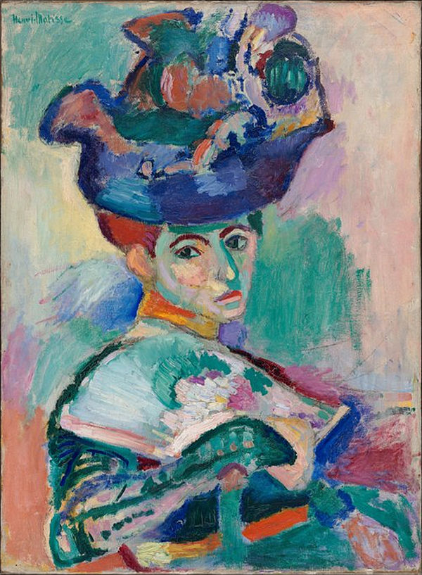

Fauvism is the style of les Fauves (French for "the wild beasts"), a group of early twentieth-century modern artists whose works emphasized painterly qualities and strong color over the representational or realistic values retained by Impressionism. While Fauvism as a style began around 1904 and continued beyond 1910, the movement as such lasted only a few years, 1905–1908, and had three exhibitions. The leaders of the movement were André Derain and Henri Matisse.